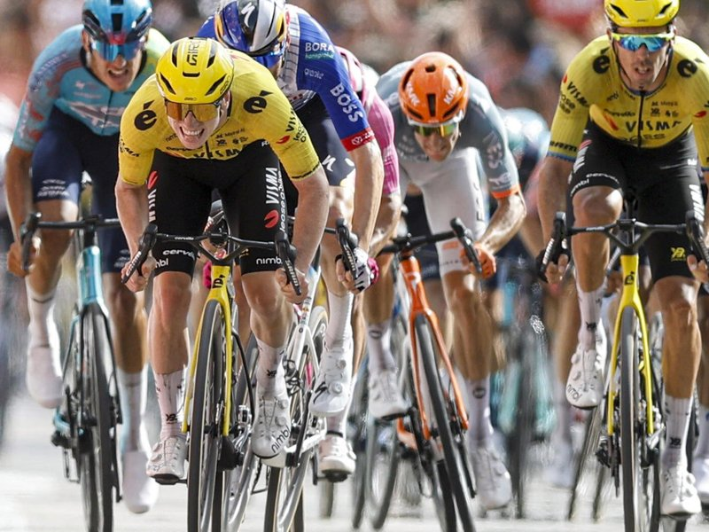
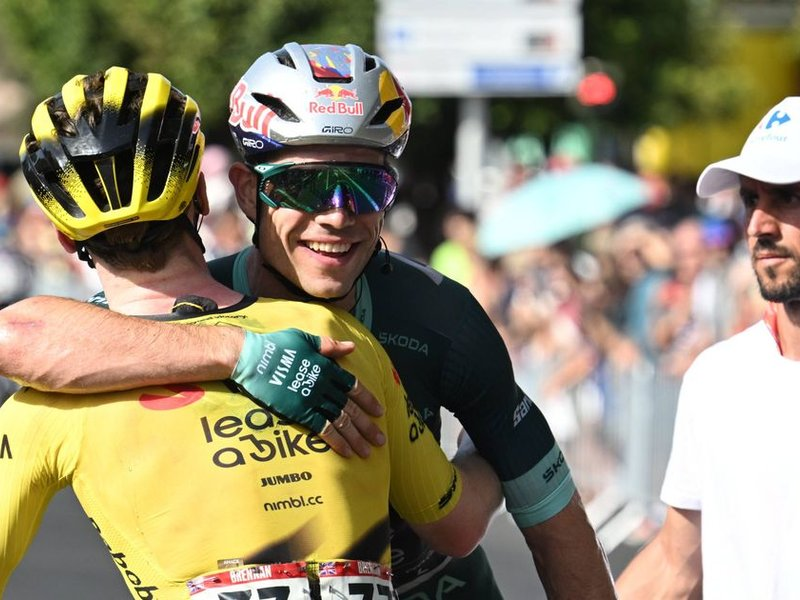

Out of Aracena, into the wind
8 Sep 2026
181.1 km. Hills early, flat late, monastery finish. Break gets hope; bunch should close.
Tuesday 8 Sep 2026
Stage 16, Tue 8 Sep: Cortegana → La Rábida / Palos de la Frontera, 181.1 km (official: hilly; sprinters’ day after rest). Neutralised ~13:05 CEST; expected arrival ~17:19 CEST (~23:19 PH). No categorised climbs. Intermediate sprint Villarrasa (~km 114.5). Finish flat by the Franciscan monastery where Columbus sailed.
GC into the stage (after Stage 15 / rest day Mon 7 Sep): Red Enric Mas 52:05:56. Gall +2:06. Roglič +2:10. Carapaz +4:24. Onley white. Green van Aert 267 (Brennan 159). Polka Buitrago. Yesterday rest; Visma already on five stage wins (Brennan 3, van Aert 2).
Delayed scoop, morning PH: the race hasn’t finished yet in Spain — this is the preview board. Sierra de Aracena rolls for the first half (breakaway bait, no Cat markers), then Huelva plains flatten and the coast can throw crosswinds. Domestique/CUTD consensus: Matthew Brennan is the man to beat if the bunch is together; van Aert is Visma’s Plan B if it gets messy. Laporte already out (Stage 14), so green jersey midwifes the leadout.
Mas banks 2:06 into week three; GC should sleep unless echelons carve the red jersey group. Tomorrow Sevilla flat again, then the 32 km Jerez chrono that actually moves the general.

8 Sep 2026
181.1 km. Hills early, flat late, monastery finish. Break gets hope; bunch should close.

8 Sep 2026
Visma’s sprint deck after the rest day: young Brit for the bunch gallop, green jersey if tactics turn.